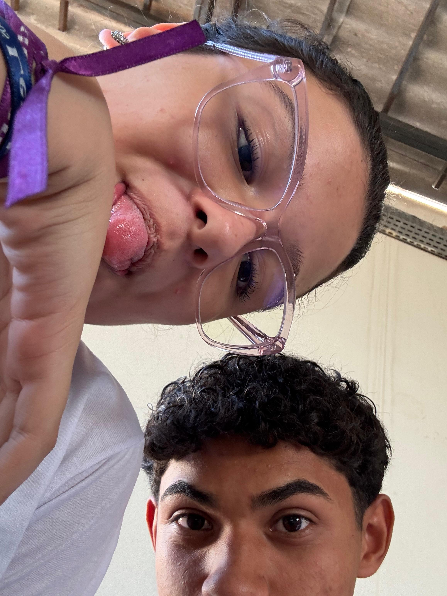
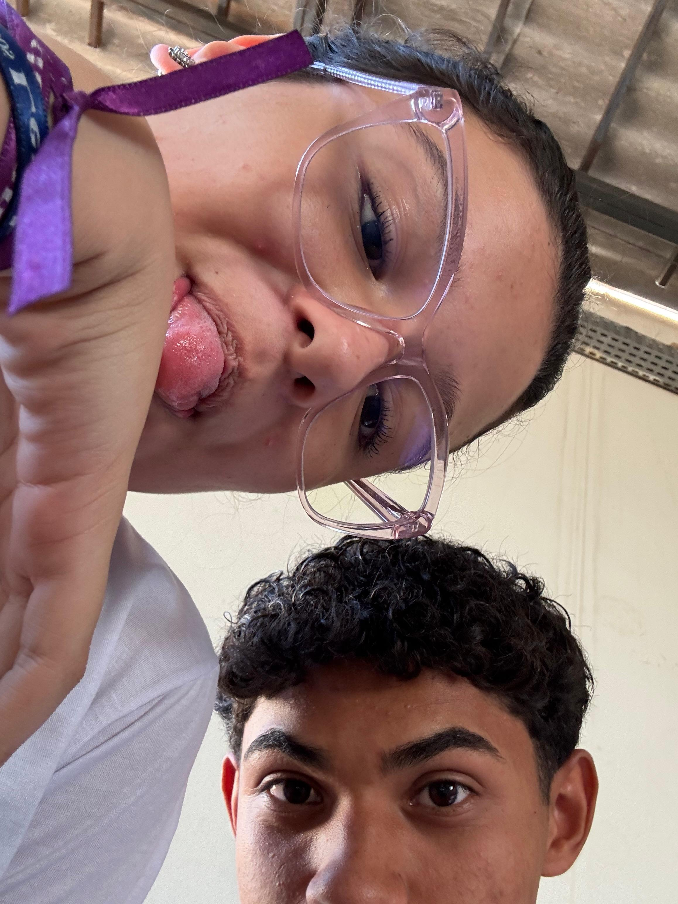
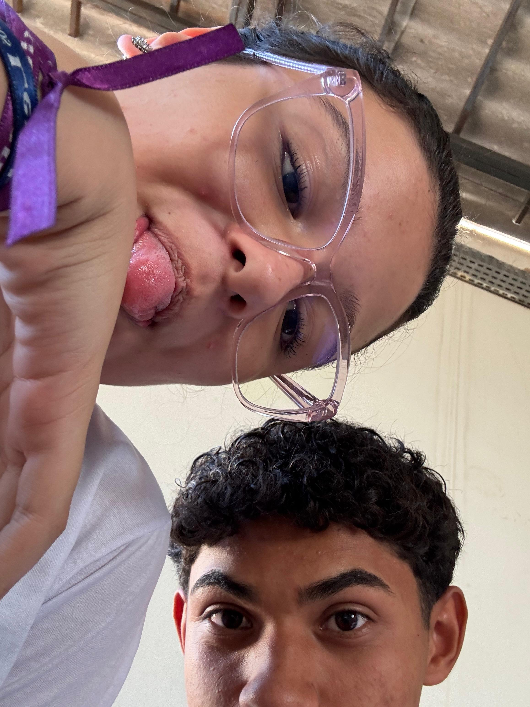
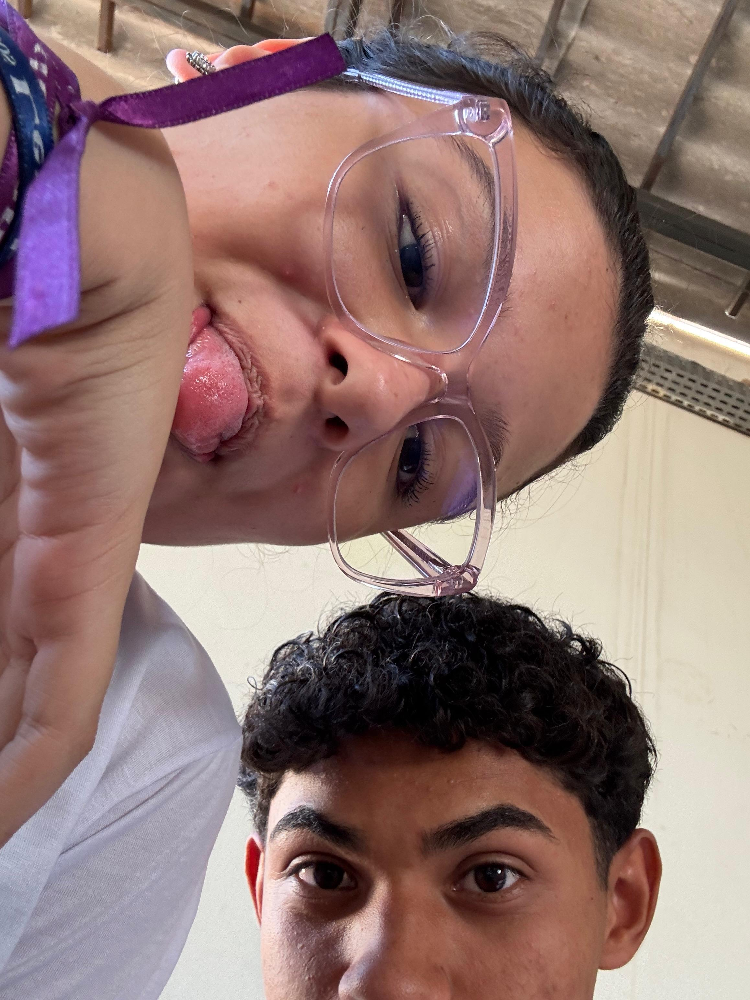

Eu só queria te dizer que:
Eu te amo muito, Sophia 💙


 


 

Oii meu bem💌, tenho algumas coisas para te dizer:
Desde o dia que a gente se conheceu eu percebi que você era uma pessoa diferente ✨, era mais legal, mais sorridente, inteligente etc...
Desde o dia que a gente se conheceu eu vi que você era uma boa pessoa, uma pessoa feliz e que de alguma forma me fazia feliz também 💕.
Os dias foram passando, passando... E o meu sentimento por você foi só aumentando, a gente criou um sentimento juntos que só a gente sabe explicar, um sentimento que em tão pouco tempo se tornou amor ❤️, paixão, afeto, respeito etc...
Eu diria que eu sou hipócrita né, porque quando se fala em sentimento comigo ou eu prefiro mudar de assunto, ou prefiro não falar sobre, mas com você é diferente 💖, eu sinto que com você eu posso ser eu do jeito que eu sou, eu sinto que posso confiar em você, e agradeço por você também confiar em mim, por mais que muitas das vezes nem em mim mesmo eu confio.
Eu só queria te dizer que desde quando você chegou em minha vida, eu me tornei uma pessoa melhor 🌹, eu me tornei uma pessoa certa e decidida do que eu quero, porque eu quero você! E hoje eu já não me vejo mais sem você, em todo lugar, em toda hora, em todo minuto, em todo segundo, meu pensamento está ligado à você 💞!
Desde o momento que eu acordo, até o momento que eu durmo, você está em meus pensamentos, você é a primeira coisa que eu penso quando eu acordo e a última coisa que eu penso antes de dormir 😴.
Eu queria te fazer essa carta para te falar o tamanho do meu amor por você 💌, eu queria te fazer essa carta para te dizer o quanto você é especial para mim, o quanto você é importante na minha vida, o quanto eu te amo e o quanto eu quero você ao meu lado para sempre 💕.
Mas desde a primeira palavra que eu escrevi até agora, eu percebi que não existe palavras suficientes para expressar o tamanho do meu amor por você, não existe palavras suficientes para expressar o quanto você é especial para mim e o quanto você é importante na minha vida.
Eu amo cada detalhe seu 🥰, eu amo seu sorriso, eu amo seu olhar, eu amo seu jeito de ser, eu amo tudo em você! Amo quando você se preocupa comigo, amo quando você me conta as coisas do seu dia a dia, amo quando você me faz sentir especial, se eu fosse descrever tudo que eu amo em você, eu acho que essa carta nunca iria acabar ♾️.
Confesso que eu tenho medo de te perder, medo de não ser o suficiente para você, medo de não te fazer feliz, medo de não corresponder ao seu amor, mas eu prometo que vou fazer de tudo para te fazer feliz, para te amar do jeitinho que você merece ser amada 💖.
Confesso que eu me sinto mal as vezes por você não me escutar, mas meu amor amor por você é muito maior do que esse sentimento, afinal, ninguém me escuta mesmo, assim como ninguém é perfeito também...
Me sinto mal quando você se coloca para baixo, porque eu sei e você também sabe que você é uma pessoa incrÃvel 🌟, uma pessoa maravilhosa, uma pessoa que merece tudo de bom que a vida tem para oferecer, você é linda, você é inteligente, e o mais importante de tudo, você é minha mulher!!! 💞
Esse presente que eu te entreguei não é tão caro, não é tão valioso, mas ele foi feito com todo o meu amor, com todo o meu carinho, e eu espero que você goste, porque eu fiz com o meu coração para você 💙.
Saiba que eu nunca vou me arrepender de ter você comigo, você é a melhor coisa que já aconteceu na minha vida...
E te agradeço por você ser você... 💖
✨ Enfim, nessa carta que você acabou de ler, tem 4.897 letras, 655 palavras, 47 frases, e mesmo assim, nenhuma dessas letras, palavras ou frases são suficientes para demonstrar o tamanho do meu amor por você, porque o meu amor por você é infinito... ♾️💙
💙 Amor, você é a melhor parte dos meus dias.
Obrigado por estar comigo, por me fazer sorrir e por me amar do jeitinho que eu sou 💕.
Quero viver muitos momentos lindos ao seu lado, hoje, amanhã e sempre. 💖
Eu te amo, Sophia, infinitamente! 💙
Com todo o meu amor,
Seu neném que te ama muito.💙